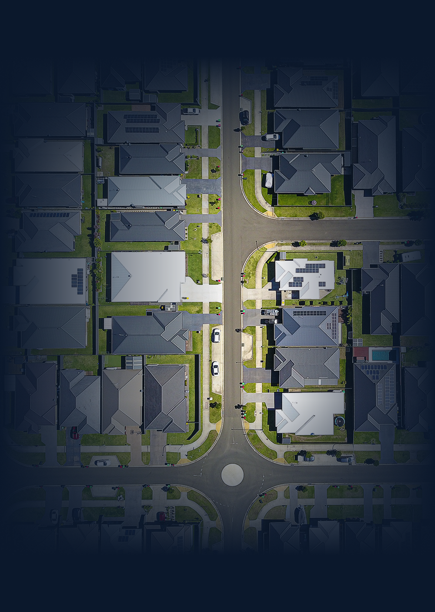

Lenah Valley, TAS 7008
Good to Know
Lenah Valley, TAS 7008 is a tightly-held inner-Hobart house market within the Hobart City Council area, currently positioned as a long-hold capital growth submarket in Tasmania's most established residential corridor. Sitting 6 km northwest of the Hobart CBD, the suburb is characterised by leafy streets, a blend of heritage and contemporary housing, and an established owner-occupier base.
The suburb is home to roughly 6,533 residents across 3,073 dwellings, with vacancy at just 0.59% — one of the tightest rental markets in greater Hobart.
RCS Breakdown
HtAG ProprietaryLenah Valley scores an RCS™ of 79 — a strong overall signal, but the headline doesn't tell you why. The three sub-scores below reveal whether that 79 is earned through risk minimisation, capital growth, or cashflow — and which portfolio brief it fits. Unlock the breakdown.
Quick Area Stats & Risk
Market Trends
Lenah Valley's $551K and 3.84% yield are today's snapshot. The 10-year trajectory below turns it into context — showing whether you're entering at the start of a leg up, mid-cycle, or near a peak. Note: historical trends only, not forecasts. Unlock the trends.
$551K is today. The 10-year trajectory reveals whether that's the top of a run, the start of a new leg, or somewhere mid-cycle. Unlock the trend line.
$630pw today, with rent growth (+4.5% YoY) outpacing price growth (+2.1%). That spread determines whether yield is expanding or compressing across the next cycle. Unlock the trend line.
Where is Lenah Valley in its cycle — and is the 3.84% yield holding?
Cycle phase tells you whether you're buying near the bottom (room to run) or top (compression ahead). Yield trajectory tells you whether cashflow is durable or being eroded — the single most important question for a long-hold thesis.

Supply & Demand
Lenah Valley's headline numbers — SoM 0.36%, Inventory 1.45 months, Vacancy 0.59% — show where the market is today. The two cards below answer where it's heading. Direction is what separates a buy from a wait. Unlock to see.
Is housing supply tightening or building up?
With Stock on Market already at 0.36%, the trend is what matters. SoM, inventory, building approvals and hold period together reveal whether the market is starving for stock (price pressure up) or quietly building a pipeline (pressure down).

Is buyer and renter demand heating up or cooling off?
With vacancy at 0.59%, the question is whether demand is still building or quietly peaking. Days on market, vacancy, search index and clearance rate are the four pulse-points — when they diverge, they signal a turning point.

Fundamentals
Lenah Valley looks tightly-held and stable on the surface — but the three layers below separate suburbs that genuinely hold value from ones that only look like they do.
Unlock to decide.
Is Lenah Valley genuinely stable — or just expensive?
IRSAD 1047 hints at affluence, but socio-economic strength alone doesn't guarantee resilience. Combined with the renter-to-owner balance and unit-to-house ratio, you get the three signals that separate a tightly-held submarket from one carrying hidden volatility.

Where do Lenah Valley prices go over the next 12 months?
Today's $551K is a snapshot. Projected ROI and the volatility index tell you whether to commit capital now, wait for a softer entry, or rotate into a steadier Hobart submarket.

Can you actually buy into Lenah Valley — and exit cleanly?
Tightly-held suburbs reward long-hold investors but punish anyone who needs liquidity. Annual sales and rental volume reveal whether your capital can reposition — or sits structurally locked in.

Education & Infrastructure
Property data alone doesn't explain why some Hobart suburbs hold value across decades. The amenity layer — schools, transport, hospitals, employment — is the most consistent leading indicator of long-hold capital growth. Unlock to see.
Does Lenah Valley's school catchment + infrastructure pipeline justify the price?
School ranks anchor family demand and tenant quality. The active infrastructure pipeline shifts a suburb's price ceiling over the next 5–10 years. Together they tell you whether Lenah Valley has structural support for the next leg of capital growth.

Lenah Valley shows strong fundamentals. The platform tells you whether it's the best fit for your portfolio.
The signals on this page are directional. Inside HtAG you get the full RCS™ breakdown, the Growth Rate Cycle position, the 10-year price & yield trajectory, supply / demand direction, and the Dex engine that ranks Lenah Valley against every other suburb in Australia — the same research layer professional buyers agents use to time entries.
